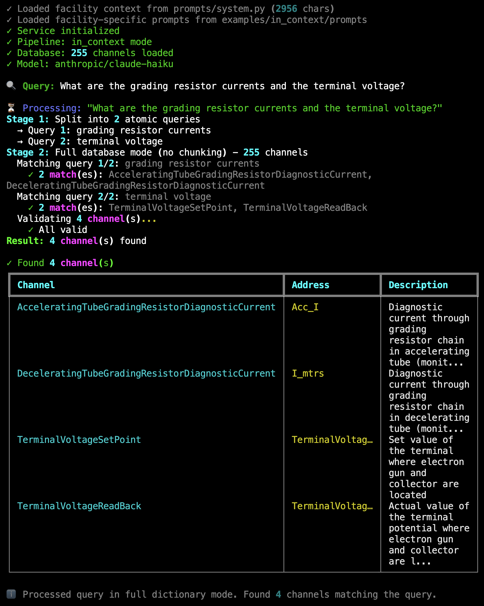
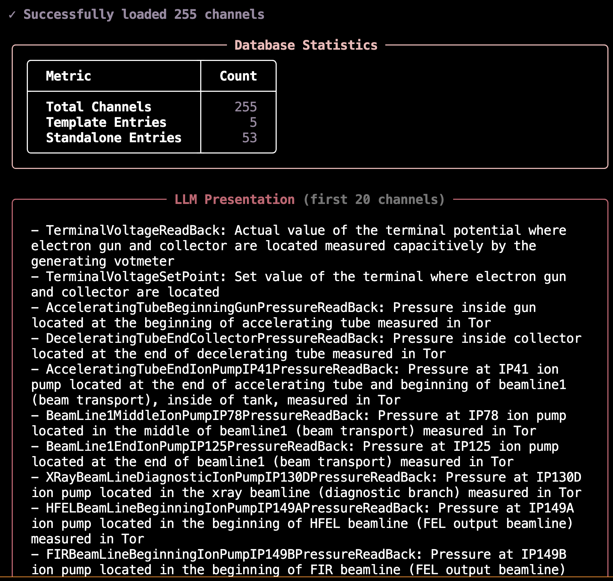
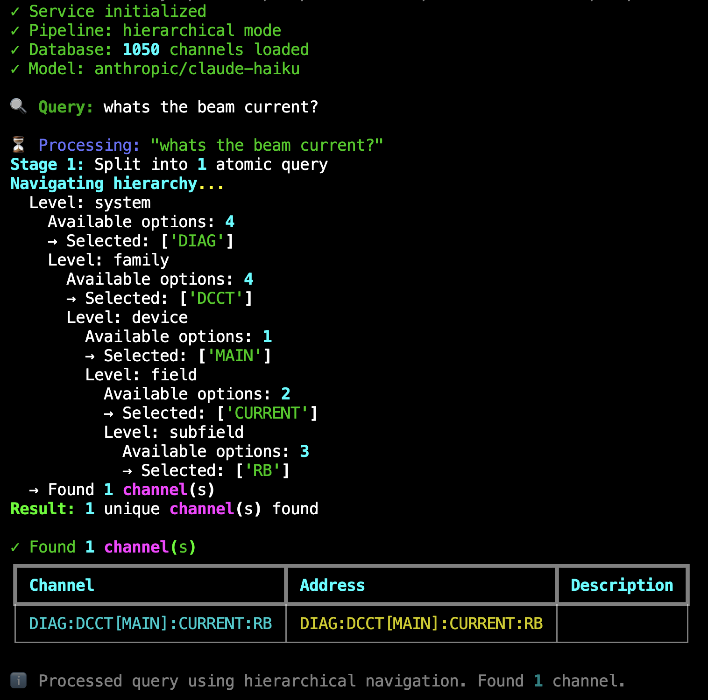
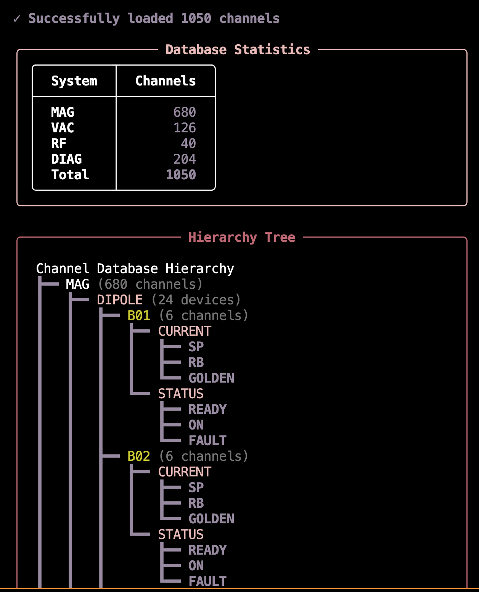
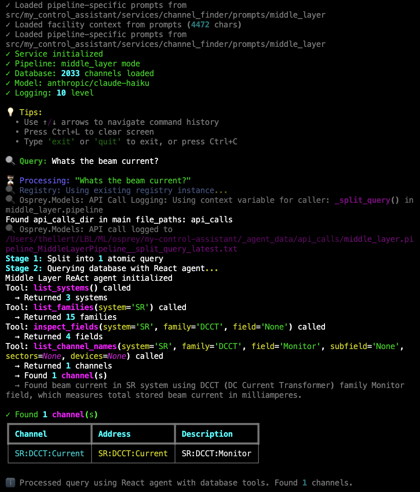
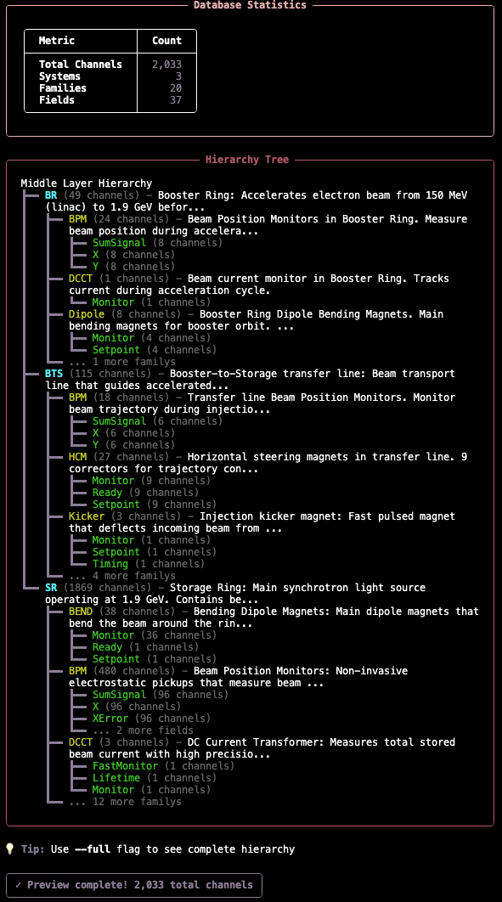

Part 2: Building Your Channel Finder#
Step 3: Semantic Channel Finding Pipelines#
Academic Reference
For a comprehensive theoretical framework and analysis of semantic channel finding in complex experimental infrastructure, see Hellert et al. (2025), “From Natural Language to Control Signals: A Conceptual Framework for Semantic Channel Finding in Complex Experimental Infrastructure,” available on arXiv:2512.18779.
The Core Challenge: Bridging Human Language and Control System Addresses
Control systems at scientific facilities present a fundamental communication gap: operators and physicists think in terms of physical concepts (“beam current,” “terminal voltage,” “ion pump pressure”), while control systems use technical addresses (SR01C___DCCT1_AM00, TMVST, IP41Pressure). This gap becomes critical in large facilities with thousands to hundreds of thousands of channels—manually looking up addresses is impractical, and exact string matching fails because users don’t know the precise naming conventions.
Semantic channel finding solves this by using LLM-powered pipelines to translate natural language queries into specific control system addresses. Instead of requiring users to memorize technical names or browse through documentation, they can ask for what they need in their own words. The system understands the semantic meaning and finds the correct channels, even when query terminology doesn’t exactly match the database.
Why This Matters for Control Systems:
Accessibility: Non-experts can interact with complex systems without extensive training on naming conventions
Efficiency: Eliminates time spent searching documentation or asking colleagues for channel names
Reliability: Reduces errors from mistyped or misremembered addresses
Scalability: Makes systems with thousands of channels as easy to use as small systems
Integration: Enables natural language interfaces for automated procedures and diagnostics
Three Pipeline Implementations
The framework provides three semantic channel finding implementations, each suited to different facility architectures:
In-Context Search: Direct semantic matching—best for small to medium systems (few hundred channels)
Hierarchical Navigation: Structured navigation through system hierarchy—scales to large systems with strict naming patterns (thousands+ channels)
Middle Layer Exploration: React agent with database query tools—scales to large systems organized by function rather than naming patterns (thousands+ channels)
All three pipelines share the same interface and capabilities, differing only in their matching strategy and database organization. Choose based on your system architecture, or try multiple and benchmark which performs better for your facility.
Switching Between Pipelines
To switch pipelines, edit config.yml and change the pipeline_mode setting:
channel_finder:
pipeline_mode: in_context # or "hierarchical" or "middle_layer"
That’s it—no code changes required. The framework includes complete implementations of all three pipelines, and the project template provides example databases, CLI tools, and benchmark datasets. The tabs below detail each pipeline’s workflow, database format, and testing tools.
Customize prompts for your facility
After building your database, edit facility_description.py with your facility’s systems and terminology to dramatically improve matching accuracy. See Channel Finder Prompt Customization in Part 4 for step-by-step guidance.
AI-Assisted Pipeline Selection
Not sure which pipeline to use? Let a coding assistant help you choose based on your channel naming patterns.
When to use this workflow:
Setting up Channel Finder for the first time
You have channel examples but aren’t sure which pipeline fits best
You want to have a discussion with a coding assistant to help you choose the right pipeline
Setup (one-time):
# Copy the task to your project
osprey tasks copy channel-finder-pipeline-selection
Then use in your AI assistant:
@.ai-tasks/channel-finder-pipeline-selection/instructions.md Help me select the right Channel Finder pipeline.
Note
Browse all tasks interactively: osprey tasks
For more information about AI-assisted development workflows, see AI-Assisted Development.
Concept: Put the entire channel database in the LLM context and ask it to find matches.
Best for: Small to medium systems (few hundred channels), facilities with flat channel lists, rapid prototyping when database structure is still evolving.
- Pipeline Flow:
Query splitting
Semantic matching against full database
Validation/correction (iterative)
Channel Names vs Addresses: Optimizing LLM Token Matching
The Challenge: Control systems use cryptic addresses (TMVST, Acc_I, IP41Pressure), but users query with natural language (“terminal voltage setpoint”, “grading resistor current”). The LLM needs to bridge this gap during semantic matching.
The Solution: When building your channel database, you choose how to create the searchable channel names:
# Default: use raw addresses as channel names
osprey channel-finder build-database
# LLM-powered: generate descriptive channel names (recommended)
osprey channel-finder build-database --use-llm
How It Works:
Your database stores three fields, but the LLM only sees two during semantic matching:
The LLM sees only: channel + description (formatted as "ChannelName: Description")
Why Descriptive Names Dramatically Improve Matching:
When a user queries “terminal voltage setpoint”:
Default mode (
TMVST): LLM matches on description alone → returns cryptic tokenTMVSTLLM-powered mode (
TerminalVoltageSetPoint): LLM matches on both name and description → returns semantically aligned tokenTerminalVoltageSetPoint
The descriptive channel name reinforces the semantic signal from the description, creating stronger, more consistent matches. The channel name becomes a searchable index aligned with how users think and query.
What the ``–use-llm`` flag does:
Extracts semantic tokens from descriptions (location, device type, property)
Generates unique PascalCase names that align with description content
Preserves original addresses for control system connections
Example results:
Channel (shown to LLM, searchable) |
Address (for EPICS/LabView/etc.) |
|---|---|
|
|
|
|
Note: You can manually edit channel names in the database JSON file at any time to customize them for your facility’s terminology and conventions.
{kind=link}

Live Example: In-context pipeline processing “What are the grading resistor currents and the terminal voltage?” — Shows query splitting into 2 atomic queries, full database mode with 255 channels, matching 4 results (2 grading resistor currents + 2 terminal voltages), and validation confirming all channels are valid.#
Try It Now: Interactive Channel Finder
The template includes a working example database (UCSB FEL accelerator, 255 channels). Try the channel finder immediately—no database setup required:
# From my-control-assistant directory
cd my-control-assistant
# Switch to in-context pipeline
# python config.yml: set pipeline_mode to "in_context"
osprey channel-finder
Example queries to try:
🔍 Query: What is the terminal voltage?
🔍 Query: Get me the grading resistor currents and beam current
How It Works:
The in-context pipeline uses a three-stage process to translate natural language into channel addresses.
Stage 1: Query Splitting
Complex queries are broken into atomic sub-queries to improve matching accuracy. For example, “grading resistor currents and terminal voltage” becomes two separate searches.
The LLM analyzes the query structure and identifies distinct intents. Single-intent queries pass through unchanged, while multi-intent queries are split for independent processing.
Stage 2: Semantic Matching
Each atomic query is matched against the channel database using semantic similarity. The pipeline operates in two modes:
Full database mode (default, recommended for <200 channels): The entire database is presented to the LLM in a single context window. Fast and simple, but limited by model context size. Controlled by
chunk_dictionary: falseinconfig.yml.Chunked mode (for larger databases): The database is split into manageable chunks (default 50 channels per chunk, configurable via
chunk_sizeinconfig.yml), and each chunk is searched independently. Prevents context overflow but may miss cross-chunk relationships. Enable withchunk_dictionary: true.
The LLM receives the formatted database and atomic query, then identifies all matching channels based on semantic meaning rather than exact string matching. This allows queries like “beam current” to match channels with descriptions containing corresponding concepts.
Stage 3: Validation & Correction
All matched channels are validated against the database to ensure they actually exist. This catches hallucinations or malformed channel names.
If invalid channels are detected, the pipeline enters a correction loop (maximum 2 iterations):
The LLM is presented with the validation results (which channels are valid/invalid)
It re-examines the database chunk with the original query
It either corrects the invalid channels or removes them
The corrected channels are re-validated
Only validated channels appear in the final result. This ensures the assistant never provides non-existent channel addresses to users or downstream capabilities.
Simple Flat Structure - Plug and Play:
The in-context database uses a flat list where every channel has rich natural language descriptions for semantic matching:
{
"channels": [
{
"template": false,
"channel": "TerminalVoltageReadBack",
"address": "TerminalVoltageReadBack",
"description": "Actual value of the terminal potential where electron gun and collector are located measured capacitively"
},
{
"template": false,
"channel": "AcceleratingTubeGradingResistorDiagnosticCurrent",
"address": "Acc_I",
"description": "Diagnostic current through grading resistor chain in accelerating tube"
},
{
"template": true,
"base_name": "BPM",
"instances": [1, 10],
"sub_channels": ["XPosition", "YPosition"],
"address_pattern": "BPM{instance:02d}{suffix}",
"description": "Beam Position Monitors measure electron beam location",
"channel_descriptions": {
"XPosition": "Horizontal position from BPM {instance:02d} in millimeters",
"YPosition": "Vertical position from BPM {instance:02d} in millimeters"
}
}
]
}
Key features:
Flat structure: All channels at the same level, no nested hierarchy
Rich descriptions: Natural language descriptions enable semantic matching
Template support: Device families (like BPM01-BPM10) defined once and expanded automatically
Separate naming:
channel(searchable name shown to LLM) vs.address(actual PV address, not shown to LLM)LLM sees: Only
channel+descriptionduring semantic matching
Minimal setup: Just list your channels with descriptions. The pipeline handles the rest.
From CSV to Template Database
The in-context pipeline provides tools to build template-based databases from simple CSV files. This workflow streamlines database creation, especially for facilities with device families.
AI-Assisted Database Building
Need help writing effective channel descriptions? Let an AI coding assistant guide you through building a high-quality database.
When to use this workflow:
Writing channel descriptions that enable effective LLM matching
Extracting information from existing documentation or source code files
Improving database quality based on test query results
Understanding what makes descriptions helpful vs. just complete
Example query to your AI assistant:
@src/osprey/assist/tasks/channel-finder-database-builder/instructions.md Help me build my Channel Finder database.
I'm using the in-context pipeline with ~250 channels from a CSV export.
I have EPICS .db files with DESC fields and access to wiki page about out control system.
Guide me on writing descriptions that help the LLM distinguish between channels.
Note
List available tasks with: osprey tasks list
For more information about AI-assisted development workflows, see AI-Assisted Development.
Workflow Overview:
CSV File → osprey channel-finder → Template JSON Database
(raw data) build-database (optimized format)
(with optional LLM naming)
↓
osprey channel-finder validate
osprey channel-finder preview
(verify structure & presentation)
Step 1: Prepare Your CSV File
For CSV format reference, see data/raw/CSV_EXAMPLE.csv which includes inline documentation of all supported patterns. The template also includes data/raw/address_list.csv with real UCSB FEL channel data (53 standalone channels + 5 device families = 255 total expanded channels).
Create a CSV with your channel data (typically in src/my_control_assistant/data/raw/) in this format:
address,description,family_name,instances,sub_channel
TerminalVoltageReadBack,Actual value of terminal potential measured capacitively,,,
Acc_I,Diagnostic current through grading resistor chain in accelerating tube (monitors voltage distribution health),,,
DipoleMagnet{instance:02d}{sub_channel},Dipole magnets for beam bending - set point for magnet {instance},DipoleMagnet,9,SetPoint
DipoleMagnet{instance:02d}{sub_channel},Dipole magnets for beam bending - readback for magnet {instance},DipoleMagnet,9,ReadBack
SteeringCoil{instance:02d}{sub_channel},Steering coils for trajectory corrections - X direction setpoint,SteeringCoil,19,XSetPoint
SteeringCoil{instance:02d}{sub_channel},Steering coils for trajectory corrections - X direction readback,SteeringCoil,19,XReadBack
Column Definitions:
address: The actual PV address or pattern (required)description: Natural language description for semantic matching (required)family_name: Device family identifier for template grouping (optional)instances: Number of device instances in the family (optional, for templates)sub_channel: Sub-channel type (e.g., SetPoint, ReadBack) (optional, for templates)
Template Detection Logic:
Rows with
family_name: Grouped into template entries (efficient for device families)Rows without
family_name: Standalone channel entries (one-off channels)
Step 2: Run the Database Builder
The builder tool processes your CSV and generates an optimized template-based database:
cd my-control-assistant
# Basic build (uses addresses as channel names)
osprey channel-finder build-database
# With LLM-generated descriptive names (recommended)
osprey channel-finder build-database --use-llm
# If your channel names contain commas, use a different delimiter
osprey channel-finder build-database --delimiter "|"
The template includes working UCSB FEL accelerator data by default:
Format Reference:
data/raw/CSV_EXAMPLE.csv(documented examples of all patterns)Working Example:
data/raw/address_list.csv(real UCSB FEL channels)Default Output:
data/channel_databases/in_context.json(pre-built database)
For your facility’s data, specify custom paths:
osprey channel-finder build-database \
--csv data/raw/your_address_list.csv \
--output data/channel_databases/your_database.json \
--use-llm
What the Builder Does:
Loads CSV: Reads your channel data, skipping comments and empty rows
Groups by Family: Identifies device families from
family_namecolumnExtracts Common Descriptions: Automatically finds common description parts for template families
Creates Templates: Builds template-based entries with instance ranges
Generates Names (with
--use-llm): Creates descriptive PascalCase names for standalone channelsResolves Duplicates: Ensures all generated names are unique with location specificity
Adds Metadata: Includes generation date, stats, and tool provenance
LLM Name Generation Example:
The database stores three fields per channel, but the in-context pipeline only presents channel and description to the LLM during semantic matching. The address is preserved for control system connections but never shown to the LLM.
Without LLM (uses raw addresses):
{
"channel": "Acc_I",
"address": "Acc_I",
"description": "Diagnostic current through grading resistor chain in accelerating tube"
}
LLM sees: "Acc_I: Diagnostic current through grading resistor chain in accelerating tube"
With LLM (descriptive, searchable names):
{
"channel": "AcceleratingTubeGradingResistorDiagnosticCurrent",
"address": "Acc_I",
"description": "Diagnostic current through grading resistor chain in accelerating tube"
}
LLM sees: "AcceleratingTubeGradingResistorDiagnosticCurrent: Diagnostic current through grading resistor chain in accelerating tube"
The LLM uses facility-specific prompts to generate names that:
Use PascalCase format for consistency
Include location/position details (e.g., “AcceleratingTube”, “Top”, “Beginning”)
Use full words instead of abbreviations (e.g., “SetPoint” not “Set”)
Are unique across the entire database
Are self-documenting and semantic
Output Structure:
The builder creates a template-based JSON database with metadata:
{
"_metadata": {
"generated_from": "data/raw/address_list.csv",
"generation_date": "2025-11-08",
"generator": "osprey channel-finder build-database",
"llm_naming": {
"enabled": true,
"model": "anthropic/claude-haiku",
"purpose": "Generated descriptive PascalCase names for 53 standalone channels"
},
"stats": {
"template_entries": 5,
"standalone_entries": 53,
"total_entries": 58
}
},
"channels": [
{ "template": false, "channel": "TerminalVoltageReadBack", ... },
{ "template": true, "base_name": "DipoleMagnet", "instances": [1, 9], ... }
]
}
Step 3: Validate Your Database
Check for structural issues and verify the database can be loaded:
# From my-control-assistant directory
osprey channel-finder validate
# Validate specific file
osprey channel-finder validate --database path/to/database.json
# Show detailed statistics
osprey channel-finder validate --verbose
Validation Checks:
Structure: Valid JSON format, correct schema, required fields
Templates: Instance ranges
[start, end], sub-channels, patternsStandalone: All required fields (channel, address, description)
Database Loading: Can be loaded by
TemplateChannelDatabaseclassStatistics: Channel counts, compression ratio, entry types
Step 4: Preview Database Presentation
See exactly how the database will appear to the LLM:
# From my-control-assistant directory
osprey channel-finder preview
# Show all channels (not just first 20)
osprey channel-finder preview --full
This prints the database presentation directly to your terminal, showing:
Database configuration and statistics
First 20 channels in LLM presentation format (or all with
--full)Template and standalone entry breakdown
Preview Output Example:
{kind=link}

Configuration:
The build tool uses command-line arguments to specify input/output paths. The LLM configuration for name generation can optionally be added to your config.yml:
channel_finder:
# LLM configuration for name generation (optional)
channel_name_generation:
llm_batch_size: 10
llm_model:
provider: cborg
model_id: anthropic/claude-haiku
max_tokens: 2000
The database path is configured in the pipeline settings:
channel_finder:
pipeline_mode: in_context # Active pipeline: "in_context" or "hierarchical"
pipelines:
in_context:
database:
type: template
path: src/my_control_assistant/data/channel_databases/in_context.json
presentation_mode: template
CLI Commands:
All database tools are available as native CLI commands under osprey channel-finder. Run them from the my-control-assistant directory (for config.yml access):
osprey channel-finder build-database: Main builder (Workflow A: CSV → JSON)osprey channel-finder validate: Schema and loading validationosprey channel-finder preview: LLM presentation preview
Alternative: Manual JSON Creation (Workflow B)
For complete control, you can create the JSON database manually:
Create JSON file directly with template and standalone entries
Run
osprey channel-finder validateto check correctnessUpdate
config.ymlwith new database pathProceed to testing (next tab)
Both workflows are supported and documented in the tools README.
Interactive Testing & Benchmarking
Once your database is built and validated, test its functionality with the CLI for rapid iteration, then benchmark it for statistical evaluation.
Interactive CLI: Rapid Development Testing
Query your database interactively without running the full agent:
# From my-control-assistant directory
osprey channel-finder
This launches an interactive terminal where you can:
Test queries against your channel database in real-time
Watch the pipeline stages execute with live progress updates
Verify which channels are matched and why
Measure query execution time to optimize performance
Iterate on your database and see results immediately
Example queries to try:
“What’s the terminal voltage?”
“Show me all dipole magnets”
“Find steering coil setpoints”
The CLI operates independently of the agent framework, making it ideal for rapid development cycles. You can quickly iterate on your channel descriptions and immediately test the results.
Benchmarking: Critical Validation Before Production
Benchmark datasets are essential for validating your channel finder before deployment. A benchmark that performs well during development with developer-created queries may completely fail in production when users with different mental models start querying the system.
⚠️ Critical Best Practice: Domain Expert Involvement
DO NOT rely solely on developer-created test queries. This is one of the most common failure modes in production systems:
The Problem: Developers unconsciously create queries that match their mental model of the system and the database structure they built
The Result: 95%+ accuracy in development, <60% accuracy in production when real users start querying
The Solution: Gather test queries from multiple domain experts and operators before finalizing your database
Why diverse queries matter:
Different users have different mental models of the control system
Operators use different terminology than developers
Production queries often target edge cases not obvious to developers
Users query based on operational workflows, not database structure
Best practices for building benchmark datasets:
Interview Domain Experts: Talk to at least 3-5 different operators, physicists, or engineers who will use the system
Capture Real Workflows: Ask them to describe their typical queries in their own words
Include Edge Cases: Specifically ask about unusual or complex queries they might need
Diverse Terminology: Look for variations in how different experts refer to the same equipment
Regular Updates: Periodically add new queries from production usage to catch evolving patterns
Once your database is ready and you have a diverse benchmark dataset from domain experts, run systematic benchmarks to measure accuracy:
# Run all benchmark queries
osprey channel-finder benchmark
# Test specific queries (useful during development)
osprey channel-finder benchmark --queries 0,1
# Compare model performance
osprey channel-finder benchmark --model anthropic/claude-sonnet
Benchmark Capabilities:
Statistical metrics: Precision (accuracy of matches), recall (completeness), and F1 scores (harmonic mean)
Success categorization: Perfect matches (100% correct), partial matches (some correct), and failures
Parallel execution: Runs 5 queries concurrently by default to speed up large benchmark sets
Incremental saves: Results are saved after each query, so interruptions don’t lose progress
Consistency tracking: Measures whether repeated queries produce the same results
Example benchmark results:
╭───────────────────── Overall Metrics ─────────────────────╮
│ Queries Evaluated 30/30 │
│ Precision 0.949 │
│ Recall 0.950 │
│ F1 Score 0.943 │
╰────────────────────────────────────────────────────────────╯
╭───────────────────── Success Breakdown ────────────────────╮
│ ✓ Perfect Matches 27 90.0% │
│ ⚠ Partial Matches 2 6.7% │
│ ✗ No Matches 1 3.3% │
╰────────────────────────────────────────────────────────────╯
╭──────────────────────── Performance ───────────────────────╮
│ Avg Consistency 1.000 │
│ Avg Time/Query 2.343s │
╰────────────────────────────────────────────────────────────╯
Configuring Benchmarks:
The benchmark system is configured in config.yml with both global settings and pipeline-specific datasets:
channel_finder:
# Active pipeline determines which benchmark dataset is used by default
pipeline_mode: in_context
pipelines:
in_context:
database:
type: template
path: src/my_control_assistant/data/channel_databases/in_context.json
presentation_mode: template
processing:
chunk_dictionary: false
chunk_size: 50
max_correction_iterations: 2
# Benchmark dataset for this pipeline
benchmark:
dataset_path: src/my_control_assistant/data/benchmarks/datasets/in_context_benchmark.json
# In-context pipeline benchmark using UCSB FEL channels (30 queries)
# Global benchmarking configuration
benchmark:
# Execution settings
execution:
runs_per_query: 1 # Number of times to run each query
delay_between_runs: 0 # Delay in seconds between runs
continue_on_error: true # Continue even if some queries fail
max_concurrent_queries: 5 # Maximum parallel queries
query_selection: all # "all" or specific queries like [0,1,2]
# Output settings
output:
results_dir: src/my_control_assistant/data/benchmarks/results
save_incremental: true # Save results after each query
include_detailed_metrics: true # Include detailed timing/cost metrics
# Evaluation thresholds
evaluation:
exact_match_weight: 1.0
partial_match_weight: 0.5
You can override the dataset and other settings via CLI:
# Use a different dataset
osprey channel-finder benchmark \
--dataset src/my_control_assistant/data/benchmarks/datasets/custom_dataset.json
# Run specific queries
osprey channel-finder benchmark --queries 0,1,5,10
# Show detailed logs
osprey channel-finder benchmark --verbose
When to use these tools:
During development: Use the CLI to rapidly test queries as you build your database
Before deployment: Run full benchmarks with domain expert queries to validate accuracy meets production requirements (aim for >90% F1 score)
Model selection: Compare different LLM models to balance cost, speed, and accuracy for your specific use case
Continuous validation: Re-run benchmarks after database updates to ensure no regression in accuracy
Best Practices:
Rich Descriptions: Write detailed, semantic descriptions for better LLM matching
Consistent Naming: Use consistent patterns within device families
Family Grouping: Group related channels into templates for efficiency
LLM Naming: Use
--use-llmfor standalone channels to get searchable namesValidate Early: Run validation after building to catch structural issues
Preview Before Testing: Check LLM presentation to ensure clarity
Iterate with CLI: Test queries interactively before running full benchmarks
Benchmark Systematically: Run full benchmark suite before production deployment
See also
Next Step: Customize Prompts — Edit facility_description.py with your facility’s terminology to improve matching accuracy. See Channel Finder Prompt Customization.
Concept: Navigate through a structured hierarchy of systems → families → devices → fields.
Best for: Large systems (thousands+ channels), facilities with well-defined hierarchical organization, systems where context window size becomes a constraint.
{kind=link}

Live Example: Hierarchical pipeline processing “whats the beam current?” through 5 navigation levels (system → family → device → field → subfield) to find DIAG:DCCT[MAIN]:CURRENT:RB from 1,050 channels. Shows the recursive branching at each level.#
Try It Now: Interactive Channel Finder
The template includes a working example database (accelerator with magnets, vacuum, RF, and diagnostics—1,050 channels). Try the hierarchical channel finder immediately:
# From my-control-assistant directory
cd my-control-assistant
# Switch to hierarchical pipeline
# Edit config.yml: set pipeline_mode to "hierarchical"
osprey channel-finder
Example queries to try:
🔍 Query: Whats the beam current?
🔍 Query: Get me all focusing quadrupole currents
Database Format (v0.9.4+)
Hierarchical databases use a flexible schema that lets you define any hierarchy structure to match your control system. See the Database Format tab below for schema details and Building Your Own Database for a step-by-step guide.
How It Works:
The hierarchical pipeline navigates through your control system’s structure using a recursive multi-level approach.
Stage 1: Query Splitting
Identical to the in-context pipeline’s query splitting stage, complex queries are decomposed into atomic sub-queries. Each atomic query then navigates the hierarchy independently.
Stage 2: Recursive Hierarchical Navigation
The pipeline navigates through five hierarchy levels in order: system → family → device → field → subfield. At each level, the LLM selects relevant options based on the query and previous selections.
Recursive branching is the key feature that makes this scalable:
When multiple options are selected at system, family, or field levels, the pipeline branches into parallel exploration paths
Each branch continues navigating independently through the remaining levels
The device level is special: multiple devices don’t cause branching because devices within a family are structurally identical
Example navigation flow:
Query: “What’s the beam current?”
Level: system → Available: [MAGNETS, VACUUM, RF, DIAGNOSTICS] → Selected: [DIAG]
Level: family → Available: [DCCT, BPM, EMIT, TUNE] → Selected: [DCCT]
Level: device → Available: [MAIN] → Selected: [MAIN]
Level: field → Available: [CURRENT, STATUS] → Selected: [CURRENT]
Level: subfield → Available: [SP, RB] → Selected: [RB]
Result: DIAG:DCCT[MAIN]:CURRENT:RB
If the query had matched multiple families at level 2, the pipeline would branch—exploring each family path independently and combining all results.
Stage 3: Channel Assembly & Validation
Once navigation completes, the pipeline:
Builds complete channel names from all navigation paths
Validates each channel exists in the database
Filters out any invalid channels (defensive check)
Returns the validated channel list
The hierarchical approach trades speed for scalability: navigation takes multiple LLM calls (one per level), but it can handle massive channel databases that wouldn’t fit in any LLM context window.
Note
This tab shows the simplest hierarchical database pattern—a straightforward 5-level structure with basic naming. This is perfect for getting started.
For advanced patterns (navigation-only levels, friendly names, optional levels, custom separators), see the Building Your Database tab which includes detailed examples and use cases for complex naming conventions.
Nested Hierarchy Structure:
The hierarchical database organizes channels by physical system structure with rich domain context at each level:
{
"_comment": "Accelerator Control System - Hierarchical Channel Database",
"hierarchy": {
"levels": [
{"name": "system", "type": "tree"},
{"name": "family", "type": "tree"},
{"name": "device", "type": "instances"},
{"name": "field", "type": "tree"},
{"name": "subfield", "type": "tree"}
],
"naming_pattern": "{system}:{family}[{device}]:{field}:{subfield}"
},
"tree": {
"MAG": {
"_description": "Magnet System: Controls beam trajectory and focusing. Includes dipoles, quadrupoles, sextupoles, and correctors.",
"QF": {
"_description": "Focusing Quadrupoles: Positive gradient magnets. Focus horizontal, defocus vertical. Part of tune correction system.",
"DEVICE": {
"_expansion": {
"_type": "range",
"_pattern": "QF{:02d}",
"_range": [1, 16]
},
"CURRENT": {
"_description": "Excitation Current (Amperes): Current through coil windings. Proportional to field gradient.",
"SP": {"_description": "Setpoint (read-write): Commanded current"},
"RB": {"_description": "Readback (read-only): Measured current"}
},
"STATUS": {
"_description": "Operational status indicators",
"READY": {"_description": "Ready (read-only): Power supply ready"},
"ON": {"_description": "On (read-only): Power supply energized"}
}
}
}
},
"DIAG": {
"_description": "Diagnostic System: Beam instrumentation and measurement devices",
"DCCT": {
"_description": "DC Current Transformers: Non-invasive beam current measurement",
"DEVICE": {
"_expansion": {
"_type": "list",
"_instances": ["MAIN"]
},
"CURRENT": {
"RB": {"_description": "Readback (read-only): Measured beam current in mA"}
}
}
}
}
}
}
Key features:
Clean schema: Single
hierarchysection combines level definitions and naming pattern with built-in validationFlexible structure: Each level specifies its
nameandtype(treefor semantic categories,instancesfor numbered/patterned expansions)Deep descriptions: Rich domain knowledge at every level guides LLM navigation
Instance expansion: Define device families once (e.g., QF01-QF16) using
_expansionwith ranges or listsPhysical organization: Hierarchy mirrors actual control system structure
Automatic validation: System ensures naming pattern references match level names, catching errors at load time
Understanding Hierarchy Levels: Tree vs Instances
Each level in the hierarchy.levels array specifies its behavior during navigation. Understanding the two level types is key to building effective hierarchical databases.
Tree Levels (``”type”: “tree”``):
Purpose: Navigate through named semantic categories
Behavior: LLM selects from explicitly defined options at this level; multiple selections trigger branching
When to use: For categorical decisions where each option has different meaning
- Examples:
Systems: MAG (magnets), VAC (vacuum), RF (radio frequency), DIAG (diagnostics)
Families: DIPOLE, QUADRUPOLE, SEXTUPOLE, CORRECTOR
Fields: CURRENT, STATUS, POSITION, VOLTAGE
Subfields: SP (setpoint), RB (readback), GOLDEN (reference)
Instance Levels (``”type”: “instances”``):
Purpose: Expand across numbered or named instances that share the same structure
Behavior: Instances are generated from
_expansiondefinition (range or list)When to use: For device families where all instances have identical structure
- Examples:
Devices: QF01, QF02, …, QF16 (all focusing quadrupoles with same fields)
Numbered sensors: BPM01, BPM02, …, BPM20 (all beam position monitors)
Named instances: MAIN, BACKUP (both have same measurement structure)
Key Difference:
Tree: Each option may have different children (MAG system has different families than VAC system)
Expand Here: All instances have identical children (QF01 has same fields as QF02, QF03, etc.)
Typical Pattern for Accelerators:
system [tree] → family [tree] → device [expand_here] → field [tree] → subfield [tree]
↓ ↓ ↓ ↓ ↓
Navigate Navigate Expand all Navigate Navigate
(MAG/VAC/RF) (QF/QD/DIPOLE) (01-16) (CURRENT/STATUS) (SP/RB)
This pattern creates a powerful combination: semantic navigation through systems and families, automatic expansion across device instances, then semantic navigation through measurements.
Result example: MAG:QF[QF03]:CURRENT:RB (Magnet system → QF family → device QF03 → CURRENT field → RB subfield)
Manual JSON Creation: A Structured Approach
Unlike the in-context pipeline (which has automated CSV-to-JSON builders), hierarchical databases require manual JSON creation. This reflects their purpose: representing well-organized control systems with existing hierarchical structures.
AI-Assisted Database Building
Need help structuring your hierarchy and writing descriptions? Let an AI coding assistant guide you through the process.
When to use this workflow:
Organizing your control system into a hierarchical structure
Writing distinguishing descriptions at branching points
Understanding which hierarchy levels need the most detailed descriptions
Extracting hierarchy information from existing documentation
Example query to your AI assistant:
@src/osprey/assist/tasks/channel-finder-database-builder/instructions.md Help me build my Channel Finder database.
I'm using the hierarchical pipeline for an accelerator with ~1,050 channels.
My naming follows SYSTEM:FAMILY[DEVICE]:FIELD:SUBFIELD pattern.
Guide me on writing descriptions that help the LLM navigate the hierarchy correctly.
Note
List available tasks with: osprey tasks list
For more information about AI-assisted development workflows, see AI-Assisted Development.
When to Use This Workflow:
Your control system has a clear hierarchical structure (systems → families → devices → fields)
You have > 1,000 channels (hierarchical scales better than in-context)
Your naming convention already follows a pattern (e.g.,
SYSTEM:FAMILY[DEVICE]:FIELD:SUBFIELD)You value auditability and transparent navigation logic
Step 1: Understand the Schema
The hierarchical database format in OSPREY uses a clean, flexible schema with two top-level keys:
{
"hierarchy": {
"levels": [
{"name": "system", "type": "tree"},
{"name": "family", "type": "tree"},
{"name": "device", "type": "instances"},
{"name": "field", "type": "tree"},
{"name": "subfield", "type": "tree"}
],
"naming_pattern": "{system}:{family}[{device}]:{field}:{subfield}"
},
"tree": { /* nested structure */ }
}
hierarchy: Configuration combining level definitions and naming pattern. This section includes:
levels: Ordered array defining each hierarchy level. Each level specifies:
name: Level identifier used in navigation and naming patterntype: Either"tree"(navigate through named semantic categories like MAG, VAC, RF) or"instances"(expand numbered/patterned instances like QF01, QF02 that share the same structure)
Define as many or as few levels as your system needs—three levels for simple systems, five for typical accelerators, ten or more for complex facilities.
naming_pattern: Template for assembling complete channel names from navigation selections. Uses Python format string syntax with level names as placeholders (e.g.,
{system}:{device}:{field}). All placeholders must reference defined level names.
Advanced Hierarchy Patterns (v0.9.6+)
Three advanced features enable flexible hierarchical organization for diverse control system naming conventions:
Use Case: Provide semantic navigation context without cluttering channel names. Perfect when your PV names are self-contained but benefit from hierarchical browsing.
How It Works: Not all hierarchy levels need to appear in the naming pattern. Omit levels from naming_pattern to use them for navigation only.
Example (JLab CEBAF pattern):
{
"hierarchy": {
"levels": [
{"name": "system", "type": "tree"}, // Navigation only
{"name": "family", "type": "tree"}, // Navigation only
{"name": "location", "type": "tree"}, // Navigation only
{"name": "pv", "type": "tree"} // Used in pattern ✓
],
"naming_pattern": "{pv}"
},
"tree": {
"Magnets": {
"Skew Quads": {
"North Linac": {
"MQS1L02.S": {"_description": "Current Setpoint"},
"MQS1L02M": {"_description": "Current Readback"}
}
}
}
}
}
Navigation Path: Magnets → Skew Quads → North Linac → MQS1L02.S
Generated Channel: MQS1L02.S
Benefits:
Clean semantic navigation through system hierarchy
Channel names stay concise (just the PV string)
Backward compatible with existing PV naming schemes
LLM gets rich context from navigation levels for better matching
Example Database: hierarchical_jlab_style.json
Use Case: Use human-readable names for navigation while preserving technical naming conventions in channel names. Separate “what operators call it” from “what the control system needs”.
How It Works: Add _channel_part field to tree nodes to decouple the tree key (navigation) from the naming component (channel name).
Example:
{
"hierarchy": {
"levels": [
{"name": "system", "type": "tree"},
{"name": "device", "type": "tree"}
],
"naming_pattern": "{system}:{device}"
},
"tree": {
"Magnets": {
"_channel_part": "MAG",
"_description": "Magnet control system",
"Skew Quadrupoles": {
"_channel_part": "SK",
"_description": "Skew quadrupole family"
}
}
}
}
Navigation Path: Magnets → Skew Quadrupoles
Generated Channel: MAG:SK
Key Features:
_channel_partdefaults to tree key (backward compatible)Empty string
_channel_part: ""creates navigation-only nodesMix and match: some levels with
_channel_part, some withoutWorks with instance expansion (
_expansion)
Benefits:
Operators navigate using familiar terminology
Channel names use facility-specific technical codes
Easier onboarding for new operators (friendly names in navigation)
Maintains compatibility with existing control systems
Example Database: hierarchical_jlab_style.json
Use Case: Generate both base channels AND variants with additional suffixes/subdevices. Common for signals that have setpoint/readback pairs or channels that optionally include intermediate levels.
How It Works: Mark levels as "optional": true in hierarchy definition. Nodes without children are automatically detected as leaves. Use _is_leaf: true ONLY on nodes that have children but are also complete channels themselves.
Example (Signal with optional suffix):
{
"hierarchy": {
"levels": [
{"name": "system", "type": "tree"},
{"name": "device", "type": "instances"},
{"name": "signal", "type": "tree"},
{"name": "suffix", "type": "tree", "optional": true}
],
"naming_pattern": "{system}-{device}:{signal}_{suffix}"
},
"tree": {
"SYSTEM": {
"DEVICE": {
"_expansion": {
"_type": "range",
"_pattern": "DEV-{:02d}",
"_range": [1, 10]
},
"SIGNAL-Y": {
"_is_leaf": true,
"_description": "Base signal - also has RB/SP variants (explicit _is_leaf needed)",
"RB": {
"_description": "Readback variant (already a leaf - no _is_leaf needed)"
},
"SP": {
"_description": "Setpoint variant (already a leaf - no _is_leaf needed)"
}
}
}
}
}
}
Generated Channels:
SYSTEM-DEV-01:SIGNAL-Y(base, skips optional suffix)SYSTEM-DEV-01:SIGNAL-Y_RB(with RB suffix)SYSTEM-DEV-01:SIGNAL-Y_SP(with SP suffix)
Key Features:
_is_leaf: truemarks a node as a complete channelLeaf nodes can still have children (for optional levels)
Automatic separator cleanup (removes
::and trailing_)Multiple optional levels can be chained
Benefits:
Single definition generates both base and variant channels
Handles complex naming conventions (e.g., with/without subdevices)
Explicit leaf marking makes intent clear
Supports gradual migration (some devices with sublevels, some without)
Example Database: optional_levels.json (82 channels demonstrating optional levels and separator overrides)
Use Case: Override default separators for specific nodes to match existing EPICS naming conventions that use different delimiters in different contexts.
How It Works: Add _separator metadata to any tree node to customize the separator before its children, overriding the default from the naming pattern.
Simple Example:
Your naming pattern uses colons everywhere:
{
"hierarchy": {
"naming_pattern": "{system}:{device}:{signal}:{suffix}"
}
}
Default behavior (all colons):
CTRL:DEV-01:Mode:RB (colon before RB)
CTRL:DEV-01:MOTOR:Position (colon before Position)
But your facility’s actual PV convention uses:
Underscore (
_) for record field suffixes (RB, SP, CMD)Dot (
.) for motor subsystem navigation
Solution - Add separator overrides:
{
"tree": {
"CTRL": {
"DEVICE": {
"_expansion": {"_instances": ["DEV-01", "DEV-02"]},
"Mode": {
"_separator": "_",
"_is_leaf": true,
"_description": "Operating mode",
"RB": {"_description": "Readback"},
"SP": {"_description": "Setpoint"}
},
"MOTOR": {
"_separator": ".",
"_description": "Motor subsystem",
"Position": {"_description": "Position"},
"Velocity": {"_description": "Velocity"}
}
}
}
}
}
Result - Matches your convention:
CTRL:DEV-01:Mode_RB (underscore from _separator)
CTRL:DEV-01:Mode_SP (underscore from _separator)
CTRL:DEV-01:MOTOR.Position (dot from _separator)
CTRL:DEV-01:MOTOR.Velocity (dot from _separator)
Why This Matters:
Many EPICS facilities have evolved naming conventions where:
Historical subsystems use dots:
OLD:MOTOR.SpeedModern subsystems use colons:
NEW:MOTOR:SpeedRecord fields always use underscores:
DEV:Signal_RB
Without separator overrides, you’d need separate databases or complex restructuring. With overrides, each node declares its own separator independently.
Multiple Overrides in One Path:
Different nodes can override independently:
"LEGACY": {
"_separator": ".",
"CTRL": {
"_separator": "-",
"Mode": {
"_separator": "_",
"RB": {...}
}
}
}
Generates: CTRL:LEGACY.CTRL-Mode_RB (colon, then dot, then dash, then underscore)
Key Features:
Override works at any hierarchy level
Each node’s
_separatoronly affects its immediate childrenBackward compatible (no
_separator= use pattern default)Combines with optional levels seamlessly
Common EPICS Patterns:
"Signal": {
"_separator": "_",
"RB": {...}, // Signal_RB
"SP": {...} // Signal_SP
}
"LegacyMotor": {
"_separator": ".",
"Speed": {...}, // LegacyMotor.Speed
"Position": {...} // LegacyMotor.Position
}
Example Database: optional_levels.json (shows separator overrides with optional levels)
tree: The nested hierarchy structure with descriptions at every level (details below).
Step 2: Build Your Hierarchy Tree
The tree follows a nested structure where each level contains:
Top-level systems with _description fields:
"tree": {
"MAG": {
"_description": "Magnet System (MAG): Controls beam trajectory and focusing...",
/* families go here */
},
"VAC": {
"_description": "Vacuum System (VAC): Maintains ultra-high vacuum...",
/* families go here */
}
}
Device families within each system:
"QF": {
"_description": "Focusing Quadrupoles (QF): Positive gradient magnets...",
"DEVICE": {
"_expansion": { /* expansion definition */ },
/* fields go here as direct children */
}
}
Container with _expansion definition specifying instances:
"DEVICE": {
"_expansion": {
"_type": "range",
"_pattern": "QF{:02d}",
"_range": [1, 16]
},
/* fields defined here */
}
This generates QF01, QF02, …, QF16 automatically. For explicit lists:
"DEVICE": {
"_expansion": {
"_type": "list",
"_instances": ["MAIN", "BACKUP"]
},
/* fields defined here */
}
Physical quantities or subsystems (as direct children of DEVICE):
"DEVICE": {
"_expansion": { /* ... */ },
"CURRENT": {
"_description": "Excitation Current (Amperes): Current through coil windings...",
"SP": {"_description": "Setpoint (read-write): Commanded current"},
"RB": {"_description": "Readback (read-only): Measured current"}
},
"STATUS": {
"_description": "Operational status indicators",
"READY": {"_description": "Ready (read-only): Power supply ready"},
"ON": {"_description": "On (read-only): Power supply energized"}
}
}
Specific measurements or control points (as direct children of each field):
"CURRENT": {
"_description": "Excitation Current (Amperes)...",
"SP": {"_description": "Setpoint (read-write): Commanded current"},
"RB": {"_description": "Readback (read-only): Measured current"},
"GOLDEN": {"_description": "Golden reference value for optimal operation"}
}
Step 3: Write Rich Descriptions
Descriptions are critical for LLM navigation. Good descriptions include:
Full name expansion: “QF” → “Focusing Quadrupoles (QF)”
Physical function: “Focus horizontal, defocus vertical”
Domain context: “Part of tune correction system”
Units and ranges: “(Amperes)”, “Typically 0-200A”
Access mode: “(read-write)” or “(read-only)”
Example of excellent description depth
"DEVICE": {
"_expansion": {
"_type": "range",
"_pattern": "QF{:02d}",
"_range": [1, 16]
},
"CURRENT": {
"_description": "Quadrupole Excitation Current (Amperes): Current through QF coil windings. Proportional to positive field gradient. Typically 0-200A. Adjusted for tune correction and beam optics optimization.",
"SP": {
"_description": "Setpoint (read-write): Commanded focusing current for tune correction."
},
"RB": {
"_description": "Readback (read-only): Measured focusing current from DCCT sensor."
}
}
}
The more context you provide, the better the LLM can match user queries to the correct path.
Step 4: Validate Your Database
The validation tool auto-detects your pipeline type and validates accordingly:
# From my-control-assistant directory
osprey channel-finder validate
# Or validate a specific file
osprey channel-finder validate --database path/to/hierarchical.json
For hierarchical databases, validation checks:
JSON Structure: Valid syntax, required top-level keys (hierarchy, tree)
Schema Validation: Naming pattern references exactly match level names (prevents typos and out-of-sync errors)
Level Configuration: All levels have valid types (tree or instances), properly configured
Hierarchy Consistency: All levels properly nested, instance expansion definitions valid
Database Loading: Can be successfully loaded by
HierarchicalChannelDatabaseclassChannel Expansion: Tree structure expands correctly to generate channel names
If you encounter issues, the validator will report specific problems with line numbers or key paths to help you debug.
Step 5: Preview Database Presentation
See how your hierarchical database will be presented to the LLM during navigation:
# From my-control-assistant directory
# Quick overview (default: 3 levels, 10 items per level)
osprey channel-finder preview
# Show 4 levels with statistics
osprey channel-finder preview --depth 4 --sections tree,stats
# Complete view with all sections
osprey channel-finder preview --depth -1 --max-items -1 --sections all
# Focus on specific subsystem
osprey channel-finder preview --focus M:QB --depth 4
Preview Tool Parameters (v0.9.6+)
The preview tool supports flexible display options for exploring large hierarchical databases without overwhelming your terminal.
Display Control:
--depth N: Maximum hierarchy depth to display (default: 3, use -1 for unlimited)--max-items N: Maximum items to show per level (default: 10, use -1 for unlimited)--full: Legacy flag, equivalent to--depth -1 --max-items -1
Section Selection:
--sections SECTIONS: Comma-separated list of sections to display (default: tree)tree: Visual hierarchy tree with channel countsstats: Per-level unique value statisticsbreakdown: Channel count breakdown by pathsamples: Random sample channel namesall: All of the above
Focus & Filtering:
--focus PATH: Zoom into specific subtree using colon-separated path (e.g.,M:QBshows only QB family in M system)--database FILE: Preview a specific database file, auto-detects type (overrides config)
Example Workflows:
# Quick check of overall structure
osprey channel-finder preview --sections stats
# Deep dive into magnet quadrupoles
osprey channel-finder preview --focus M:QF --depth 5 --max-items 15
# Compare database files
osprey channel-finder preview --database examples/consecutive_instances.json --depth -1
osprey channel-finder preview --database examples/optional_levels.json --depth -1
# Full analysis with all metrics
osprey channel-finder preview --depth -1 --max-items -1 --sections all
Why These Parameters Matter:
For large databases (1000+ channels), viewing the complete hierarchy can overwhelm your terminal. The preview tool helps you explore incrementally:
Start with
--depth 3to understand top-level structureUse
--focusto zoom into specific subsystemsAdd
--sections statsto see level distributionFinally use
--depth -1 --max-items -1for complete view
Preview Output Example:
{kind=link}

Best Practices:
Mirror Physical Structure: Organize the hierarchy to match your actual control system architecture
Consistent Naming: Use the same naming conventions throughout (e.g., always use “Setpoint” not “Set” or “SP”)
Rich Context: Write descriptions as if explaining to a new operator - assume no prior knowledge
Device Patterns: Use range notation for device families (more compact than explicit lists)
Domain Vocabulary: Include common synonyms in descriptions (e.g., “current” and “amperes”)
Test Incrementally: Build one system at a time, test it, then add the next
Validate Early: Run validation after each system to catch issues before they compound
Interactive Testing & Benchmarking
Once your database is built and validated, test its functionality with the CLI for rapid iteration, then benchmark it for statistical evaluation.
Interactive CLI: Rapid Development Testing
Query your database interactively without running the full agent:
# From my-control-assistant directory
osprey channel-finder
This launches an interactive terminal where you can:
Test queries against your channel database in real-time
Watch the pipeline stages execute with live progress updates
Verify which channels are matched and why
Measure query execution time to optimize performance
Iterate on your database and see results immediately
Example queries to try:
Single channel: “What’s the beam current?” →
DIAG:DCCT[MAIN]:CURRENT:RBDevice range: “All focusing quadrupoles” → 48 channels (QF01-QF16 × 3 subfields)
Field wildcards: “Vacuum pressure in sector 1” →
VAC:ION-PUMP[SR01]:PRESSURE:RBMulti-level branching: “RF cavity voltage” → 6 channels (C1+C2 × 3 subfields)
The CLI shows navigation decisions at each level, making it easy to spot issues with descriptions or hierarchy structure.
Benchmarking: Critical Validation Before Production
Benchmark datasets are essential for validating your channel finder before deployment. A benchmark that performs well during development with developer-created queries may completely fail in production when users with different mental models start querying the system.
⚠️ Critical Best Practice: Domain Expert Involvement
DO NOT rely solely on developer-created test queries. This is one of the most common failure modes in production systems:
The Problem: Developers unconsciously create queries that match their mental model of the system and the database structure they built
The Result: 95%+ accuracy in development, <60% accuracy in production when real users start querying
The Solution: Gather test queries from multiple domain experts and operators before finalizing your database
Why diverse queries matter:
Different users have different mental models of the control system
Operators use different terminology than developers
Production queries often target edge cases not obvious to developers
Users query based on operational workflows, not database structure
Best practices for building benchmark datasets:
Interview Domain Experts: Talk to at least 3-5 different operators, physicists, or engineers who will use the system
Capture Real Workflows: Ask them to describe their typical queries in their own words
Include Edge Cases: Specifically ask about unusual or complex queries they might need
Diverse Terminology: Look for variations in how different experts refer to the same equipment
Regular Updates: Periodically add new queries from production usage to catch evolving patterns
Once your database is ready and you have a diverse benchmark dataset from domain experts, run systematic benchmarks to measure accuracy:
# Run all benchmark queries
osprey channel-finder benchmark
# Test specific queries (useful during development)
osprey channel-finder benchmark --queries 0,1
# Compare model performance
osprey channel-finder benchmark --model anthropic/claude-sonnet
Benchmark Capabilities:
Statistical metrics: Precision (accuracy of matches), recall (completeness), and F1 scores (harmonic mean)
Success categorization: Perfect matches (100% correct), partial matches (some correct), and failures
Parallel execution: Runs 5 queries concurrently by default to speed up large benchmark sets
Incremental saves: Results are saved after each query, so interruptions don’t lose progress
Consistency tracking: Measures whether repeated queries produce the same results
Example benchmark results:
╭─────────────────────────── 📊 Overall Metrics ───────────────────────────╮
│ Queries Evaluated 47/47 │
│ Precision 1.000 │
│ Recall 1.000 │
│ F1 Score 1.000 │
╰──────────────────────────────────────────────────────────────────────────╯
╭─────────────────────────── Success Breakdown ────────────────────────────╮
│ ✓ Perfect Matches 47 100.0% │
│ ⚠ Partial Matches 0 0.0% │
│ ✗ No Matches 0 0.0% │
╰──────────────────────────────────────────────────────────────────────────╯
╭────────────────────────────── Performance ───────────────────────────────╮
│ Avg Consistency 1.000 │
│ Avg Time/Query 5.605s │
╰──────────────────────────────────────────────────────────────────────────╯
Configuring Benchmarks:
The benchmark system is configured in config.yml with both global settings and pipeline-specific datasets:
channel_finder:
# Active pipeline determines which benchmark dataset is used by default
pipeline_mode: hierarchical
pipelines:
hierarchical:
database:
type: hierarchical
path: src/my_control_assistant/data/channel_databases/hierarchical.json
# Benchmark dataset for this pipeline
benchmark:
dataset_path: src/my_control_assistant/data/benchmarks/datasets/hierarchical_benchmark.json
# Hierarchical pipeline benchmark with multi-level channel structure (47 queries)
# Global benchmarking configuration
benchmark:
# Execution settings
execution:
runs_per_query: 1 # Number of times to run each query
delay_between_runs: 0 # Delay in seconds between runs
continue_on_error: true # Continue even if some queries fail
max_concurrent_queries: 5 # Maximum parallel queries
query_selection: all # "all" or specific queries like [0,1,2]
# Output settings
output:
results_dir: src/my_control_assistant/data/benchmarks/results
save_incremental: true # Save results after each query
include_detailed_metrics: true # Include detailed timing/cost metrics
# Evaluation thresholds
evaluation:
exact_match_weight: 1.0
partial_match_weight: 0.5
You can override the dataset and other settings via CLI:
# Use a different dataset
osprey channel-finder benchmark \
--dataset src/my_control_assistant/data/benchmarks/datasets/custom_dataset.json
# Run specific queries
osprey channel-finder benchmark --queries 0,1,5,10
# Show detailed logs
osprey channel-finder benchmark --verbose
When to use these tools:
During development: Use the CLI to rapidly test queries as you build your database
Before deployment: Run full benchmarks with domain expert queries to validate accuracy meets production requirements (aim for >90% F1 score)
Model selection: Compare different LLM models to balance cost, speed, and accuracy for your specific use case
Continuous validation: Re-run benchmarks after database updates to ensure no regression in accuracy
Best Practices:
Rich Descriptions: Write detailed, domain-specific descriptions at every hierarchy level
Consistent Naming: Use consistent patterns throughout the hierarchy
Iterative Testing: Test incrementally as you build each system
Domain Expert Queries: Gather test queries from multiple operators and experts
Regular Benchmarking: Re-run benchmarks after database changes to catch regressions
CLI First: Use interactive CLI for rapid iteration before running full benchmarks
Document Patterns: Keep notes on navigation patterns that work well for your facility
See also
Next Step: Customize Prompts — Edit facility_description.py with your facility’s terminology to improve matching accuracy. See Channel Finder Prompt Customization.
Concept: Agent explores database using query tools to find channels by function.
Best for: Large systems organized by function (Monitor, Setpoint) rather than naming patterns, facilities using MATLAB Middle Layer (MML) style organization, systems requiring device/sector filtering.
{kind=link}

Live Example: Middle layer pipeline processing “What’s the beam current?” using React agent with database query tools. Shows the agent calling list_systems(), list_families(), inspect_fields(), and list_channel_names() to explore the functional hierarchy (SR → DCCT → Monitor) and find SR:DCCT:Current.#
Try It Now: Interactive Channel Finder
The template includes a working example database (accelerator with Storage Ring, Booster, and Transfer Line).
# From my-control-assistant directory
cd my-control-assistant
# Switch to middle_layer pipeline
# Edit config.yml: set pipeline_mode to "middle_layer"
osprey channel-finder
Example queries to try:
🔍 Query: What's the beam current?
🔍 Query: Get me BPM X positions in sector 1
How It Works:
The middle layer pipeline uses a React agent with database query tools to find channels through functional exploration.
Stage 1: Query Splitting
Identical to the other pipelines’ query splitting stage, complex queries are decomposed into atomic sub-queries. Each atomic query then explores the database independently using the agent.
Stage 2: Agent-Based Database Exploration
The pipeline uses a LangGraph React agent with five database query tools. The agent autonomously explores the functional hierarchy (System → Family → Field → Subfield) to find matching channels.
Available Tools:
list_systems() - Get all available systems with descriptions
list_families(system) - Get device families within a system
inspect_fields(system, family, field) - Examine field structure and subfields
list_channel_names(…) - Retrieve actual PV addresses with optional filtering
get_common_names(system, family) - Get friendly device names
The agent follows this typical workflow:
Query: “What’s the beam current?”
Explore systems → Calls
list_systems()→ Finds SR, VAC, BR, BTSSelect relevant system → Chooses SR (Storage Ring) based on description
Explore families → Calls
list_families('SR')→ Finds BPM, HCM, DCCT, etc.Identify beam current family → Chooses DCCT (DC Current Transformer)
Inspect fields → Calls
inspect_fields('SR', 'DCCT')→ Finds Monitor, FastMonitor, LifetimeRetrieve channels → Calls
list_channel_names('SR', 'DCCT', 'Monitor')Report results → Returns
SR:DCCT:Current
Key Features:
Autonomous exploration: Agent decides which tools to call and in what order
Description-aware: Uses optional
_descriptionfields when available for better matchingSubfield navigation: Automatically discovers nested structures (e.g., X/Y under BPM)
Device filtering: Supports optional sector/device filtering when
DeviceListmetadata present
Stage 3: Result Aggregation & Deduplication
Results from all atomic queries are combined and deduplicated to provide a clean final result.
Functional Hierarchy Structure:
The middle layer database organizes channels by function rather than naming pattern, following the MATLAB Middle Layer (MML) convention used at accelerator facilities:
{
"SR": {
"_description": "Storage Ring: Main synchrotron light source...",
"BPM": {
"_description": "Beam Position Monitors: Non-invasive electrostatic pickups...",
"X": {
"_description": "Horizontal position readback in millimeters.",
"ChannelNames": ["SR01C:BPM1:X", "SR01C:BPM2:X", "SR01C:BPM3:X", ...],
"DataType": "Scalar",
"Mode": "Online",
"Units": "Hardware",
"HWUnits": "mm",
"PhysicsUnits": "Meters",
"MemberOf": ["BPM", "Monitor", "PlotFamily", "Save", "Archive"]
},
"Y": {
"_description": "Vertical position readback in millimeters.",
"ChannelNames": ["SR01C:BPM1:Y", "SR01C:BPM2:Y", "SR01C:BPM3:Y", ...]
},
"setup": {
"CommonNames": ["BPM 1-1", "BPM 1-2", "BPM 1-3", ...],
"DeviceList": [[1, 1], [1, 2], [1, 3], ...]
}
},
"HCM": {
"_description": "Horizontal Corrector Magnets...",
"Monitor": {
"_description": "Current readback in Amperes.",
"ChannelNames": ["SR01C:HCM1:Current", ...]
},
"Setpoint": {
"_description": "Current setpoint in Amperes.",
"ChannelNames": ["SR01C:HCM1:SetCurrent", ...]
},
"OnControl": {
"_description": "Enable/disable control...",
"ChannelNames": ["SR01C:HCM1:Enable", ...]
}
},
"DCCT": {
"_description": "DC Current Transformer: Measures beam current...",
"Monitor": {
"_description": "Beam current in milliamperes.",
"ChannelNames": ["SR:DCCT:Current"]
}
}
},
"VAC": {
"_description": "Vacuum System...",
"IonPump": {
"_description": "Ion Pumps for UHV pumping...",
"Pressure": {
"_description": "Vacuum Pressure readback (Torr).",
"ChannelNames": ["SR01C:VAC:IP1:Pressure", ...]
}
}
}
}
Key features:
Functional organization: Systems → Families → Fields → ChannelNames
Retrieved addresses: PV addresses stored in database (not built from patterns)
Optional descriptions:
_descriptionfields at all levels provide semantic contextOptional metadata: Preserve MML metadata (DataType, Mode, Units, MemberOf, etc.)
Device filtering: Optional
DeviceListenables sector/device number filteringCommon names: Optional
CommonNamesfor friendly device identifiersNested subfields: Fields can have subfields (e.g., RF PowerMonitor has Forward/Reflected)
Hierarchy Levels:
System: Top-level accelerator systems (SR=Storage Ring, BR=Booster, BTS=Transfer Line, VAC=Vacuum)
Family: Device families within systems (BPM, HCM, VCM, DCCT, IonPump, etc.)
Field: Functional categories (Monitor, Setpoint, X, Y, Pressure, Voltage, etc.)
Subfield (optional): Nested functional organization (e.g., PowerMonitor → Forward/Reflected)
ChannelNames: List of actual EPICS PV addresses
From MATLAB Middle Layer Exports
If your facility already uses MATLAB Middle Layer (MML), you can convert existing MML data structures directly to the middle layer JSON format using the included converter utility.
AI-Assisted Database Building
Need help organizing functional hierarchy and writing descriptions? Let an AI coding assistant guide you through the process.
When to use this workflow:
Organizing channels by function (System → Family → Field)
Writing descriptions that help the agent explore the database
Converting from MATLAB Middle Layer or other middle layer formats
Understanding what metadata to include for effective matching
Example query to your AI assistant:
@src/osprey/assist/tasks/channel-finder-database-builder/instructions.md Help me build my Channel Finder database.
I'm using the middle layer pipeline for an accelerator with functional organization.
I have MATLAB Middle Layer exports and want to ensure rich descriptions at all levels.
Guide me on writing descriptions that help the agent explore the database effectively.
Note
List available tasks with: osprey tasks list
For more information about AI-assisted development workflows, see AI-Assisted Development.
Workflow Overview:
MML Python Export → mml_converter.py → Middle Layer JSON Database
(MML_ao_SR.py) (conversion tool) (optimized format)
↓
osprey channel-finder validate
osprey channel-finder preview
(verify structure & presentation)
Step 1: Export Your MML Data
If you have MATLAB Middle Layer data, export the ao (accelerator object) structure to Python format. The structure typically contains system/family hierarchies with channel information.
Step 2: Use the MML Converter
The framework includes a conversion utility that transforms MML Python exports into middle layer JSON format:
cd my-control-assistant
# Convert MML exports to JSON
python -m osprey.services.channel_finder.utils.mml_converter \
--input path/to/mml_exports.py \
--output src/my_control_assistant/data/channel_databases/middle_layer.json
Using the Converter Programmatically:
from mml_converter import MMLConverter
# Import your MML exports
from my_facility_mml import MML_ao_SR, MML_ao_BR, MML_ao_VAC
# Create converter and add systems
converter = MMLConverter()
converter.add_system("SR", MML_ao_SR)
converter.add_system("BR", MML_ao_BR)
converter.add_system("VAC", MML_ao_VAC)
# Save to JSON
converter.save_json("my_facility.json")
What the Converter Does:
Extracts hierarchy: Preserves System → Family → Field → ChannelNames structure
Preserves metadata: Keeps DataType, Mode, Units, HWUnits, PhysicsUnits, MemberOf
Handles subfields: Detects nested field structures automatically
Includes setup data: Transfers CommonNames and DeviceList for filtering
Validates structure: Ensures all required fields present
Reports statistics: Shows channel counts and organization
Collaboration Welcome
The MML converter was developed and tested with the Advanced Light Source (ALS) MATLAB Middle Layer format. If your facility uses MATLAB Middle Layer or another middle layer solution with a different structure or export format, we’d love to add native support for it! Please open an issue on GitHub describing your middle layer system and we can work together to implement a converter for your facility’s format.
Alternative: Manual JSON Creation
For facilities not using MML, create the JSON database manually following the structure shown in the “Database Format” tab:
Define systems: Top-level dictionary with system keys (SR, BR, VAC, etc.)
Add families: Device families within each system
Specify fields: Functional categories with ChannelNames lists
Add descriptions (optional): Include
_descriptionfields for better semantic matchingInclude metadata (optional): Add setup information for filtering
Step 3: Validate Your Database
Check for structural issues and verify the database can be loaded:
# From my-control-assistant directory
osprey channel-finder validate \
--database src/my_control_assistant/data/channel_databases/middle_layer.json
# Show detailed statistics
osprey channel-finder validate --verbose
Validation Checks:
Structure: Valid JSON format, correct hierarchy levels
ChannelNames: All terminal fields have ChannelNames lists
Metadata: Optional fields properly formatted
Database Loading: Can be loaded by
MiddleLayerDatabaseclassStatistics: System/family/channel counts
Step 4: Preview Database Presentation
See how your database will be presented to the LLM agent during exploration:
# From my-control-assistant directory
osprey channel-finder preview
This shows you what information the agent sees at each level of exploration, helping you verify descriptions are clear and helpful.
Preview Output Example:
{kind=link}

Best Practices:
Rich Descriptions: Write clear descriptions at all levels—these are the primary guide for the LLM agent
Functional Organization: Group channels by what they do (Monitor, Setpoint) not by location
Complete Metadata: Include Units, DataType, and other metadata from your control system
Device Lists: Add DeviceList metadata if you need sector/device filtering
Common Names: Include friendly device names for better user experience
Consistent Structure: Use same field names across families (e.g., always “Monitor” not “Readback”)
Test Incrementally: Build one system at a time, test it, then add the next
Interactive Testing & Benchmarking
Once your database is built and validated, test its functionality with the CLI for rapid iteration, then benchmark it for statistical evaluation.
Interactive CLI: Rapid Development Testing
Query your database interactively without running the full agent:
# From my-control-assistant directory
osprey channel-finder
This launches an interactive terminal where you can:
Test queries against your channel database in real-time
Watch the agent explore the database with tool calls
Verify which channels are matched and why
Measure query execution time to optimize performance
Iterate on your database and see results immediately
Example queries to try:
Simple lookups: “What’s the beam current?” →
SR:DCCT:CurrentFunctional queries: “All BPM X positions” → All horizontal BPM readbacks
Filtered queries: “BPM positions in sector 1” → Sector-filtered results
Multi-system: “Vacuum pressure in booster” →
BRsystem vacuum channels
The CLI shows the agent’s tool calls and reasoning, making it easy to spot issues with descriptions or database organization.
Benchmarking: Critical Validation Before Production
Benchmark datasets are essential for validating your channel finder before deployment. A benchmark that performs well during development with developer-created queries may completely fail in production when users with different mental models start querying the system.
⚠️ Critical Best Practice: Domain Expert Involvement
DO NOT rely solely on developer-created test queries. This is one of the most common failure modes in production systems:
The Problem: Developers unconsciously create queries that match their mental model of the system and the database structure they built
The Result: 95%+ accuracy in development, <60% accuracy in production when real users start querying
The Solution: Gather test queries from multiple domain experts and operators before finalizing your database
Why diverse queries matter:
Different users have different mental models of the control system
Operators use different terminology than developers
Production queries often target edge cases not obvious to developers
Users query based on operational workflows, not database structure
Best practices for building benchmark datasets:
Interview Domain Experts: Talk to at least 3-5 different operators, physicists, or engineers who will use the system
Capture Real Workflows: Ask them to describe their typical queries in their own words
Include Edge Cases: Specifically ask about unusual or complex queries they might need
Diverse Terminology: Look for variations in how different experts refer to the same equipment
Regular Updates: Periodically add new queries from production usage to catch evolving patterns
Once your database is ready and you have a diverse benchmark dataset from domain experts, run systematic benchmarks to measure accuracy:
# Run all benchmark queries
osprey channel-finder benchmark
# Test specific queries (useful during development)
osprey channel-finder benchmark --queries 0,1
# Compare model performance
osprey channel-finder benchmark --model anthropic/claude-sonnet
Benchmark Capabilities:
Statistical metrics: Precision (accuracy of matches), recall (completeness), and F1 scores (harmonic mean)
Success categorization: Perfect matches (100% correct), partial matches (some correct), and failures
Parallel execution: Runs 5 queries concurrently by default to speed up large benchmark sets
Incremental saves: Results are saved after each query, so interruptions don’t lose progress
Consistency tracking: Measures whether repeated queries produce the same results
Configuring Benchmarks:
The benchmark system is configured in config.yml with both global settings and pipeline-specific datasets:
channel_finder:
# Active pipeline determines which benchmark dataset is used by default
pipeline_mode: middle_layer
pipelines:
middle_layer:
database:
type: middle_layer
path: src/my_control_assistant/data/channel_databases/middle_layer.json
# Benchmark dataset for this pipeline
benchmark:
dataset_path: src/my_control_assistant/data/benchmarks/datasets/middle_layer_benchmark.json
# Middle layer pipeline benchmark (35 queries)
# Global benchmarking configuration
benchmark:
# Execution settings
execution:
runs_per_query: 1 # Number of times to run each query
delay_between_runs: 0 # Delay in seconds between runs
continue_on_error: true # Continue even if some queries fail
max_concurrent_queries: 5 # Maximum parallel queries
query_selection: all # "all" or specific queries like [0,1,2]
# Output settings
output:
results_dir: src/my_control_assistant/data/benchmarks/results
save_incremental: true # Save results after each query
include_detailed_metrics: true # Include detailed timing/cost metrics
# Evaluation thresholds
evaluation:
exact_match_weight: 1.0
partial_match_weight: 0.5
You can override the dataset and other settings via CLI:
# Use a different dataset
osprey channel-finder benchmark \
--dataset src/my_control_assistant/data/benchmarks/datasets/custom_dataset.json
# Run specific queries
osprey channel-finder benchmark --queries 0,1,5,10
# Show detailed logs
osprey channel-finder benchmark --verbose
When to use these tools:
During development: Use the CLI to rapidly test queries as you build your database
Before deployment: Run full benchmarks with domain expert queries to validate accuracy meets production requirements (aim for >90% F1 score)
Model selection: Compare different LLM models to balance cost, speed, and accuracy for your specific use case
Continuous validation: Re-run benchmarks after database updates to ensure no regression in accuracy
Best Practices:
Rich Descriptions: Write detailed, semantic descriptions at all levels—they guide the agent
Functional Grouping: Organize by function (Monitor, Setpoint) not location
Consistent Naming: Use same field names across families for predictability
Iterative Testing: Test incrementally as you build each system
Domain Expert Queries: Gather test queries from multiple operators and experts
Regular Benchmarking: Re-run benchmarks after database changes to catch regressions
CLI First: Use interactive CLI for rapid iteration before running full benchmarks
See also
Next Step: Customize Prompts — Edit facility_description.py with your facility’s terminology to improve matching accuracy. See Channel Finder Prompt Customization.
2.1: OSPREY Framework Integration#
The channel finder integrates into OSPREY as a capability—a reusable component that the agent orchestrator can plan and execute. The capability acts as a thin orchestration layer that connects the framework to the service layer, while all channel finding logic lives in osprey.services.channel_finder. This separation makes the service independently testable via CLI (osprey channel-finder) and benchmarks before agent integration. The framework provides this capability natively in osprey.capabilities.channel_finding.
Capability Architecture:
@capability_node
class ChannelFindingCapability(BaseCapability):
name = "channel_finding"
description = "Find control system channel addresses based on descriptions"
provides = ["CHANNEL_ADDRESSES"] # What this capability produces
requires = [] # What this capability needs (none)
How the Agent Uses It:
Task Classification: When the user asks about channels (e.g., “What’s the beam current?”), the classifier identifies this requires channel finding
Customization point: Modify
_create_classifier_guide()to change classification behavior with few-shot examplesSee: Classification and Routing for classification mechanics
Example: Classifier Guide in Hello World tutorial
Planning: The orchestrator creates a plan that includes a
channel_findingstepCustomization point: Modify
_create_orchestrator_guide()to influence when and how the capability is plannedSee: Orchestrator Planning for orchestration logic
Example: Orchestrator Guide in Hello World tutorial
Execution: The capability calls the service layer (
ChannelFinderService) to find matching channelsContext Storage: Results are stored in the agent state as
CHANNEL_ADDRESSEScontextDownstream Use: Other capabilities (like
channel_read) consume theCHANNEL_ADDRESSEScontext
Error Handling:
The capability classifies errors for appropriate agent responses:
ChannelNotFoundError: Triggers re-planning with suggestions to refine the queryChannelFinderServiceError: Critical error, aborts execution with diagnostic information
Configuration:
The capability reads config.yml to determine which pipeline to use (in_context or hierarchical). No code changes needed—just update the config:
channel_finder:
pipeline_mode: in_context # or "hierarchical"
Step 4: The Service Layer Pattern#
A key architectural pattern: separate business logic from framework orchestration. This service layer pattern provides several critical benefits for production systems:
Clean Boundaries: Clear separation of concerns ensures that the service layer contains pure business logic and algorithms, while the capability layer handles state management and orchestration. No framework coupling exists in service code, making it easier to maintain and evolve.
Independent Testing: Service logic can be tested without framework overhead. For example, you can unit test the service directly:
service = ChannelFinderService()
result = await service.find_channels("beam current")
assert "SR:CURRENT:RB" in result.channels
Reusability: The same service can be used in multiple contexts—Osprey capabilities, standalone CLI tools, MCP servers, and web APIs. Your business logic stays portable across deployment scenarios. For example:
@mcp.tool()
async def find_channels(query: str):
service = ChannelFinderService()
return await service.find_channels(query)
Architecture Overview:
Both the service layer and the capability layer are provided natively by the framework. Your project only needs to provide prompt customizations and data.
# ===== SERVICE LAYER: osprey.services.channel_finder (framework-provided) =====
# Pure Python, no framework dependencies
class ChannelFinderService:
"""Standalone service for channel finding."""
def __init__(self):
# Load database based on config
self.pipeline = self._load_pipeline_from_config()
async def find_channels(self, query: str) -> ChannelFinderResult:
"""
Find channels matching natural language query.
This is pure business logic - no AgentState, no StateManager.
"""
result = await self.pipeline.process_query(query)
return ChannelFinderResult(
query=query,
channels=[ChannelInfo(address=ch) for ch in result.channels],
total_channels=len(result.channels),
processing_notes=result.notes
)
# ===== CAPABILITY LAYER: osprey.capabilities.channel_finding (framework-provided) =====
# Framework integration only
@capability_node
class ChannelFindingCapability(BaseCapability):
"""Thin wrapper connecting service to framework."""
name = "channel_finding"
provides = ["CHANNEL_ADDRESSES"]
async def execute(self) -> Dict[str, Any]:
search_query = self.get_task_objective()
# Delegate to service layer
service = ChannelFinderService()
result = await service.find_channels(search_query)
# Convert to framework context
context = ChannelAddressesContext(
channels=[ch.address for ch in result.channels],
description=result.processing_notes
)
# Store in framework state
return self.store_output_context(context)
Tip
Need to customize a framework capability or service beyond prompt overrides?
Use osprey eject (e.g., osprey eject capability channel_finding
or osprey eject service channel_finder) to copy the source to your project for modification.